建村伊始
一切仍然洁净，事物年轻到尚未拥有固定名字。创世者相信科学可以开启黄金、星辰和海洋，也相信马孔多终将成为一座明亮的镜子之城。
Latin American Magical Realism
拉丁美洲魔幻现实主义的史诗丰碑
多年以后，面对行刑队，奥雷里亚诺·布恩迪亚上校将会回想起父亲带他去见识冰块的那个遥远下午。
Alchemy / The First Knock
世界不是从边界之外进入马孔多的，它先以磁铁、冰块、放大镜和羊皮纸的形态，闯进布恩迪亚家族的想象。
梅尔基亚德斯带来的不是玩具，而是文明的裂缝。铁锅、钉子、门闩被无形力量牵引，何塞·阿尔卡蒂奥·布恩迪亚从此相信世界有一套可以被破译的隐秘秩序。
冰块像一枚透明的预言，冷到刺痛，却让人误以为未来可以被握在掌心。
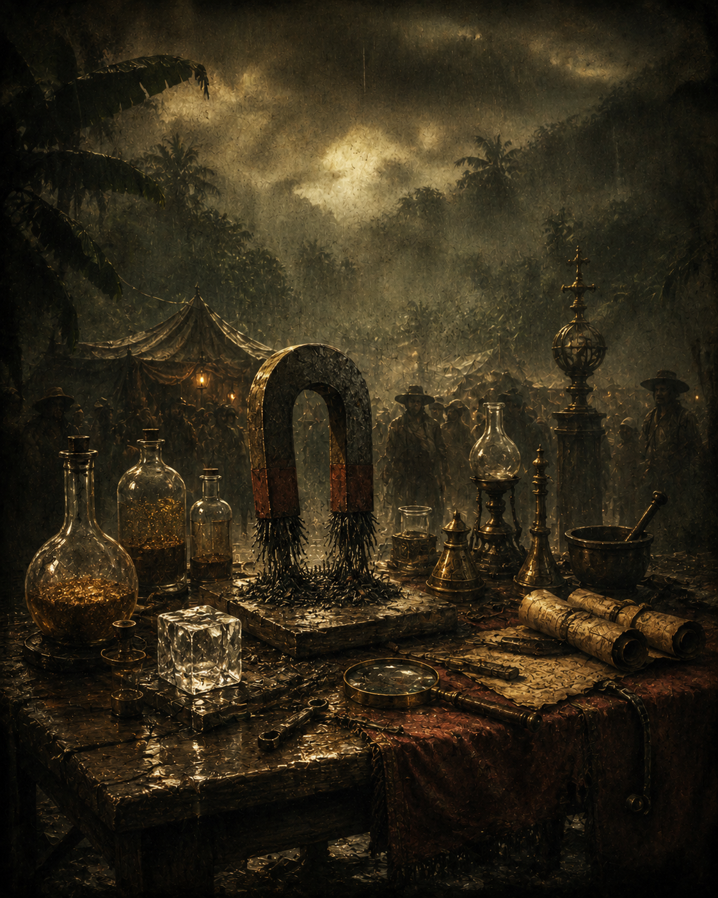
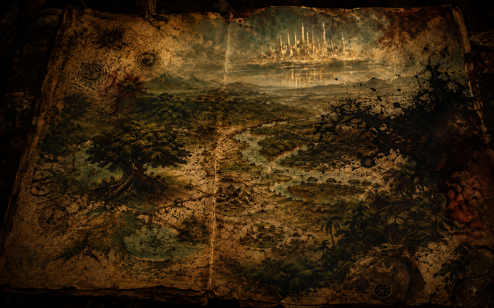
Founding Map / Coordinates
马孔多不是被发现的，它是在失路、炎热、沼泽和狂想中被发明的。
何塞·阿尔卡蒂奥·布恩迪亚带着一群人走进湿热的荒野，像带着一个尚未出生的世界寻找脐带。地图上的河流、房屋与边界都不稳定，因为这个小镇从第一天起就更像一场被命名的梦。
Chronicle / Four-Dimensional Time
历史在这里不向前走，它像潮湿墙壁上的霉斑一样扩散、重叠，又在相同的名字里重新变黑。
一切仍然洁净，事物年轻到尚未拥有固定名字。创世者相信科学可以开启黄金、星辰和海洋，也相信马孔多终将成为一座明亮的镜子之城。
铁路带来机器、合同、外语和短暂繁荣。异乡资本像潮水涌入，小镇的日常被工资、罢工、广场与被篡改的记忆撕开。
四年十一个月的雨把喧嚣浸成霉味。房屋、牲畜、衣物和意志都吸水变重，繁荣的外壳在潮湿中慢慢腐烂。
飓风不是灾难的开始，而是预言的句号。马孔多被从记忆里卷走，像一页终于读完、却从未真正被理解的手稿。
Genealogy / Portraits of Solitude
人物不是独立命运，而是同一种孤独在不同身体上的显影：创世、秩序、战争、禁闭、飞升与预言，彼此照亮，也彼此吞没。
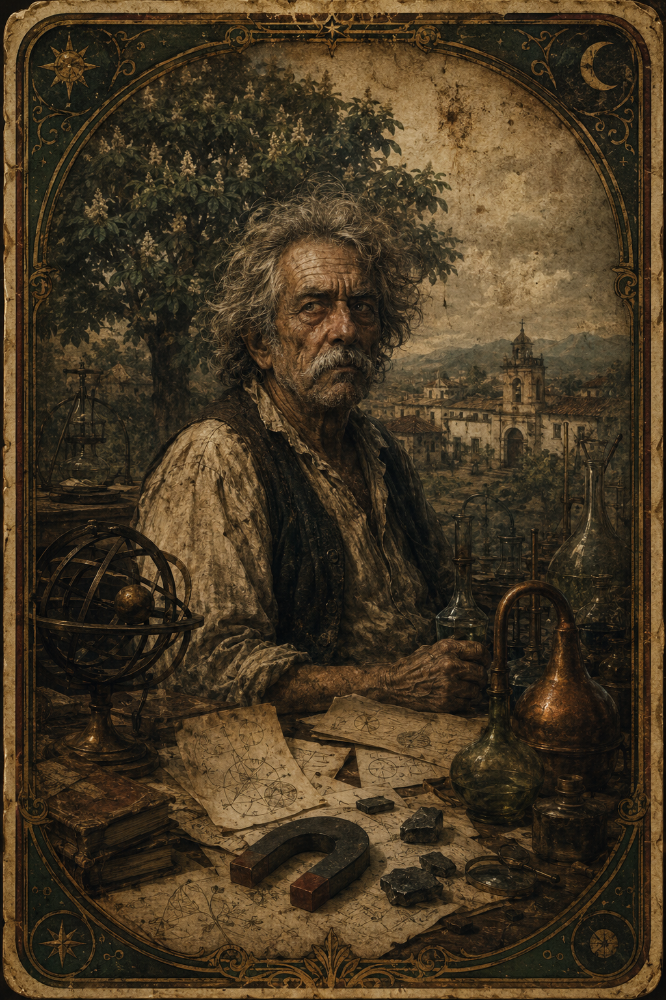
狂人与树。科学狂想像火焰一样烧穿他的日常，羊皮纸手稿在他眼前闪烁，最终他被绑在栗子树下，与自己发明的世界隔着语言和雨水。
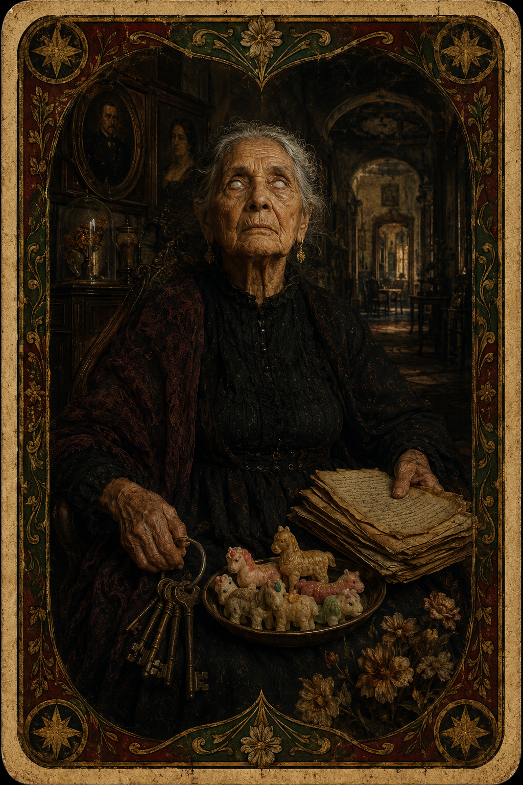
盲眼的女族长。她用糖果小动物维系家族的现实重量；晚年双目失明，却比所有人更早摸到时间循环的骨骼。
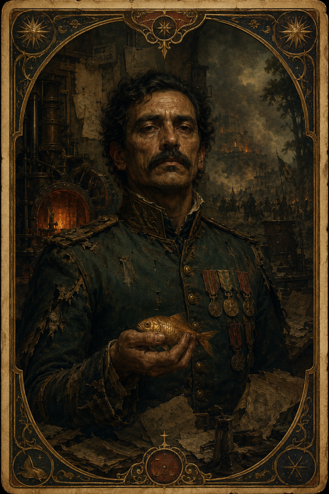
战争与金鱼。三十二场起义没有留下胜利，只留下电报、协议和沉默。他在作坊里熔铸又重造二十五条小金鱼，用机械重复抵抗空洞。
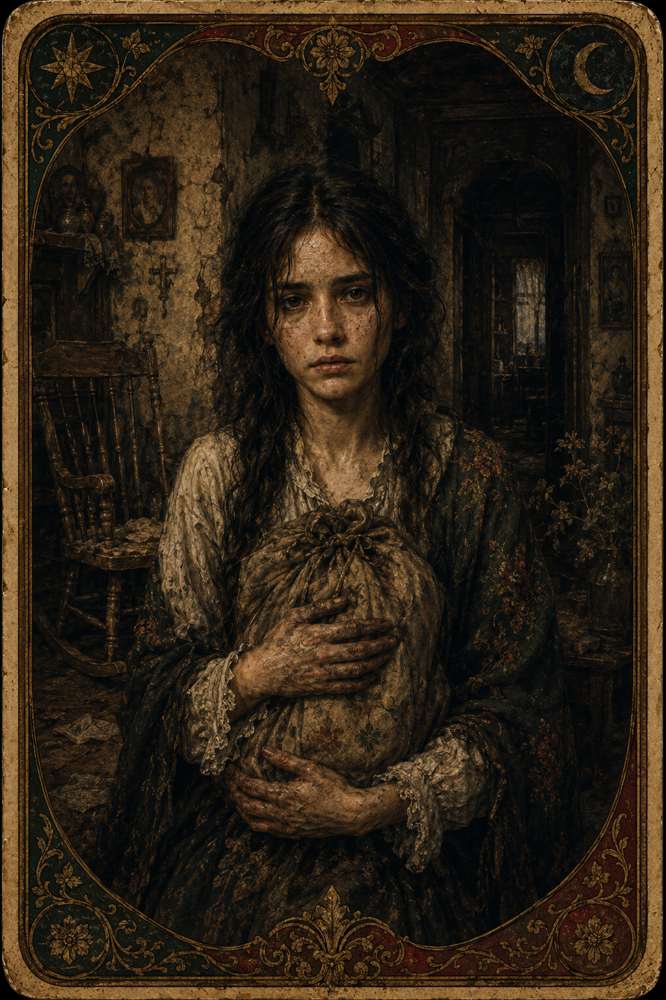
泥土与禁闭。她带着遗骨、沉默和异乡的饥饿进入家族，啃食泥墙，也啃食自己的来历；爱情与丑闻之后，她把余生封存在一间无人叩门的屋子里。
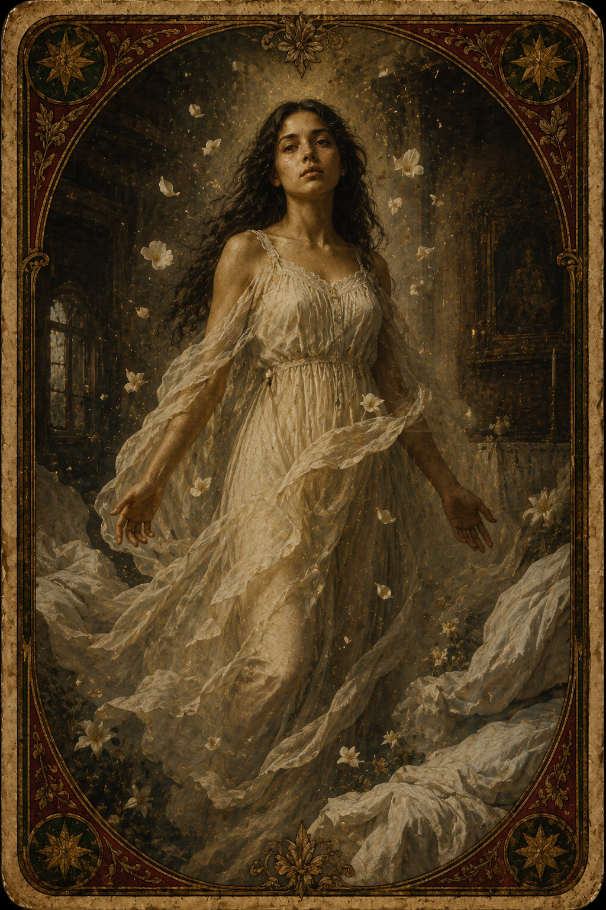
纯净到近乎危险。她不理解欲望，也不向尘世解释自己；当白床单在午后升起，她像一道无法占有的光，从家族的现实中安静脱身。
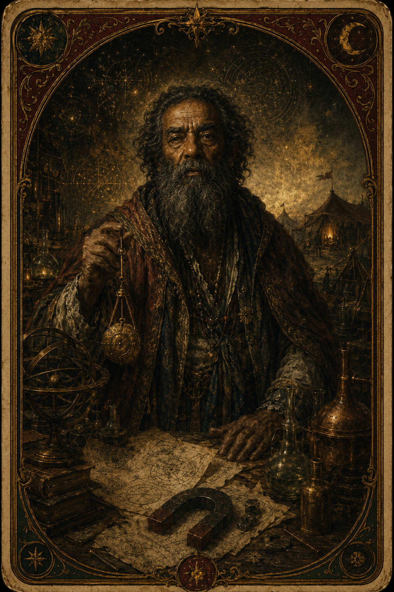
时间之外的访客。他带来磁铁、冰块、炼金术和羊皮纸，也带来马孔多无法立刻读懂的未来；他的死亡与归来，使预言拥有了人的面孔。
Family Tree / Maze of Names
在布恩迪亚家族，名字不是标签，而是性格、欲望与孤独命运的遗传回声。
“何塞·阿尔卡蒂奥”常常携带莽撞、肉身和原始冲动；“奥雷里亚诺”则更靠近沉思、孤僻、预感和战争。重复命名像一张看不见的网，温柔地继承，也冷酷地判决。
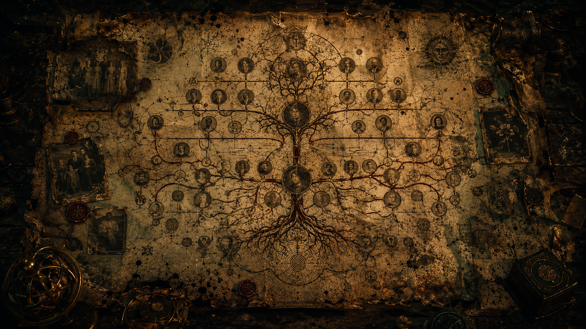
War / Hollow Victory
战争把上校推向历史中心，又把他的灵魂搬空，只剩金鱼在手指间冷却。
他发动三十二场武装起义，全部失败；他拥有十七个儿子，又逐一被命运抹去。权力、荣誉和协议越是接近，他越像从自己身体里撤退。
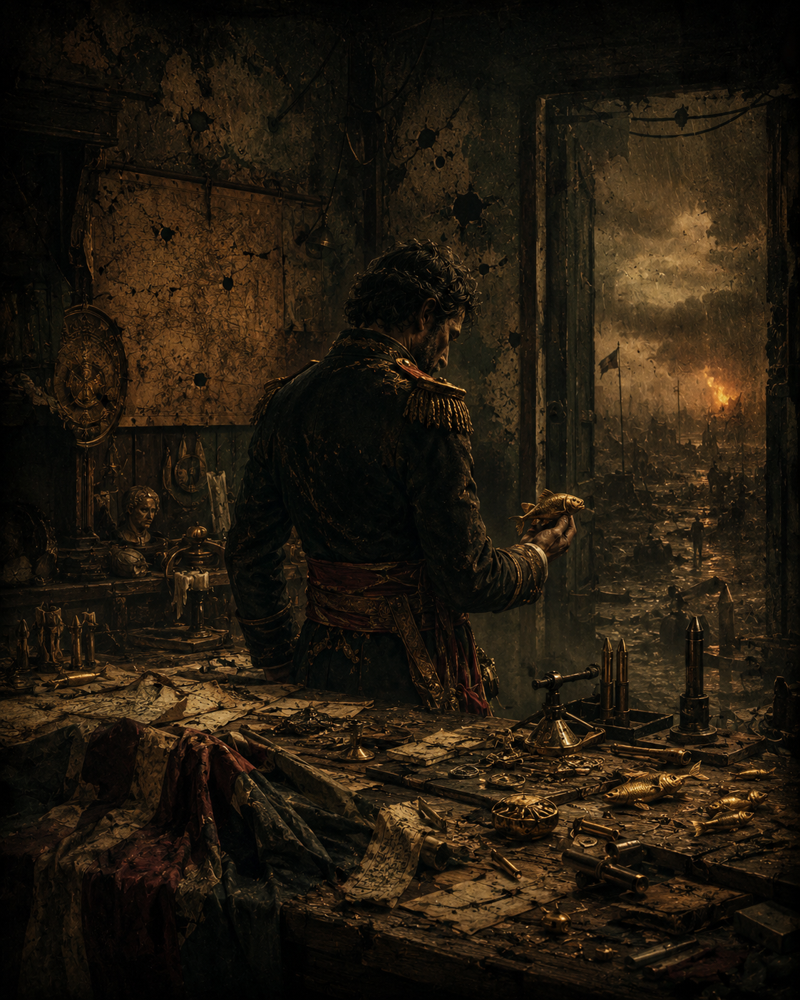
命令越短，沉默越长。远方战线像湿纸上的墨点扩散。
签字不是结束，而是空洞获得官方印章。
金鱼被熔化、重铸、再熔化，成为一套没有出口的祈祷。
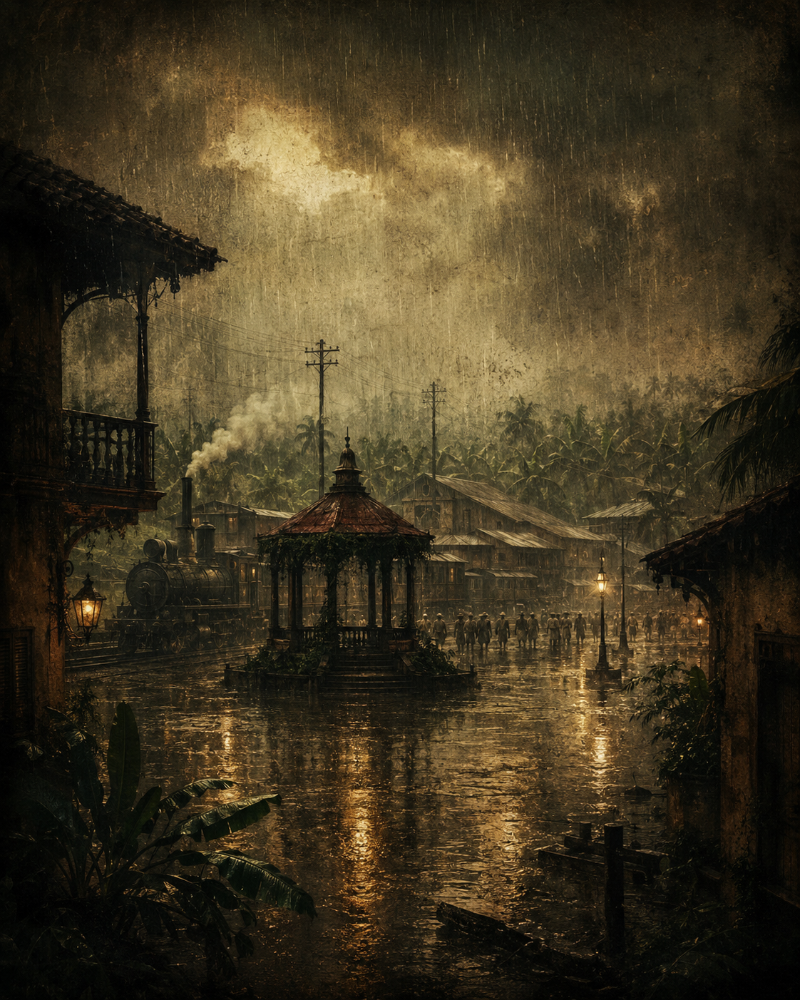
雨不是天气，它是繁华被清洗后的证词。铁轨仍在，广场仍在，但记忆被官方语言擦成空白。
Banana Company / The Rot of Prosperity
现代性曾以铁路、工资和电灯照亮马孔多，却在最潮湿的夜晚把它推向遗忘。
外来资本进入小镇时，热带金绿明亮得近乎不真实。很快，合同、罢工、广场和失踪者被雨水拖成一道难以辨认的污痕。
Symbolism / Magical Codes
魔幻现实主义不是奇观堆叠，而是现实在极端压力下显露出的隐秘结构。
忘记名字，忘记事物功用，最终忘记历史本身。标签贴满世界，却无法阻止意义从语言背后撤离。
四年十一个月的暴雨洗去繁华，也让生命和意志在潮湿中霉烂。它像一场漫长的历史审讯。
重复劳动不是生产，而是自救。熔化与重造之间，上校把孤独压缩成一枚可握住的金属形状。
爱情、预兆与气味。蝴蝶追随人物，也追随命运，在美丽中暴露一种无法摆脱的纠缠。
未来早已被写下，只是等待最后一个读者抵达。语言在这里既是钥匙，也是牢笼。
Epilogue / The Final Prophecy
时间不是河流，而是一个无法离开的圆圈。
羊皮纸手稿所记载的一切将永远不会重演，因为注定经受百年孤独的家族不会有第二次机会在大地上出现。
Macondo remains as a trace of wind, dust, ink and names.